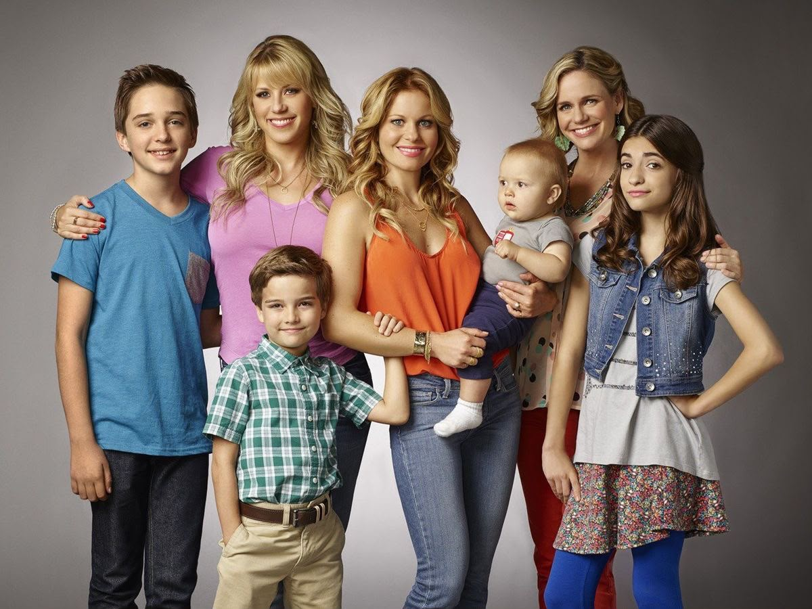
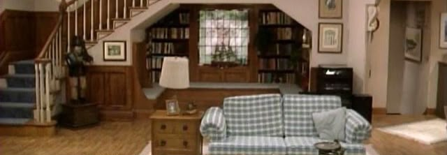
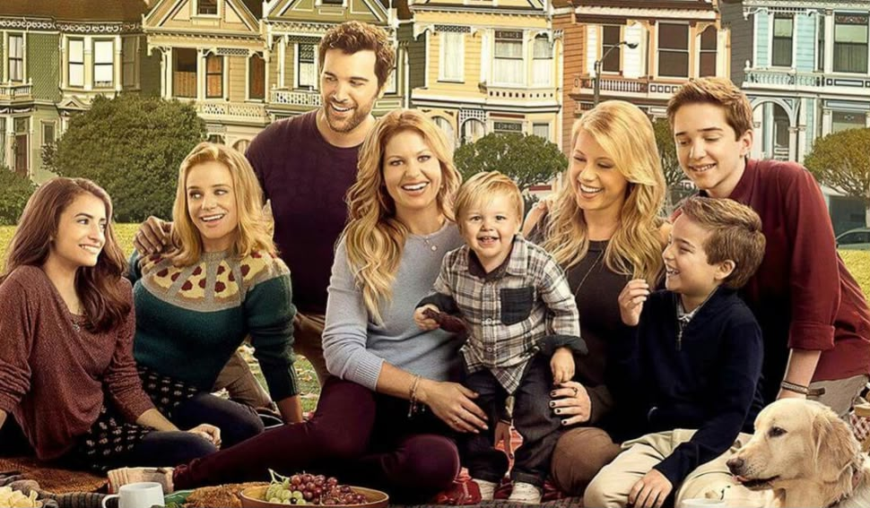
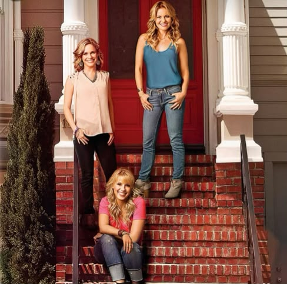
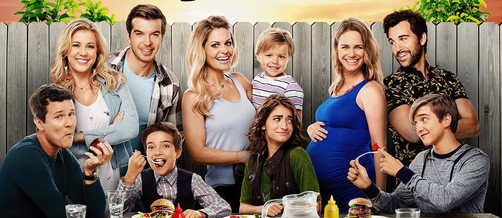
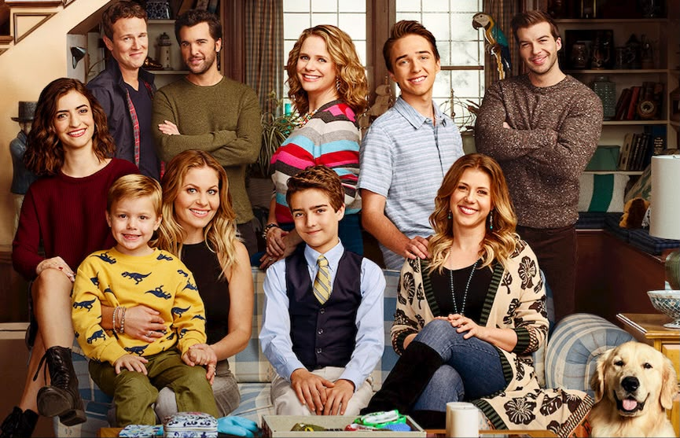
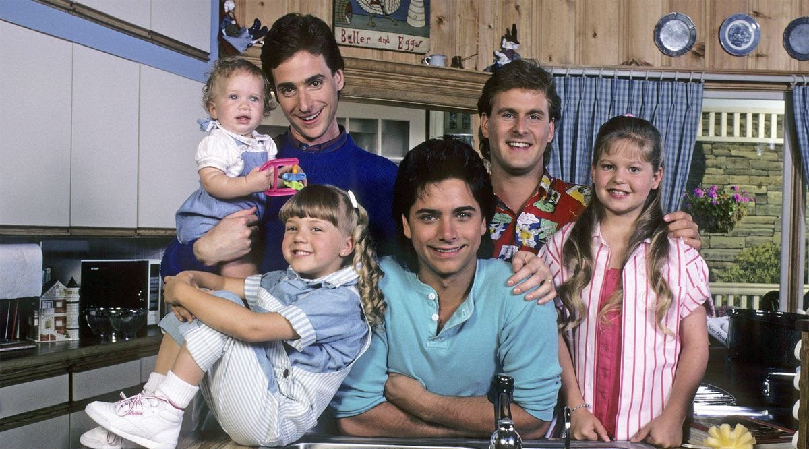
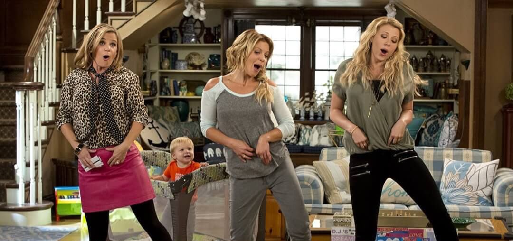

TEMPORADA 1
Se estrenó el 26 de febrero de 2016.
13 episodiosCinco temporadas en las que vemos cómo la familia sigue creciendo, con nuevos integrantes y aventuras.


Se estrenó el 26 de febrero de 2016.
13 episodios
Se estrenó el 9 de diciembre de 2016.
13 episodios
Se estrenó el 22 de septiembre de 2017.
18 episodios
Se estrenó el 14 de diciembre de 2018.
13 episodios
La primera parte salió en diciembre de 2019 y la segunda en junio de 2020.
18 episodios
Temporada 8, capítulo 24

Temporada 5, capítulo 18